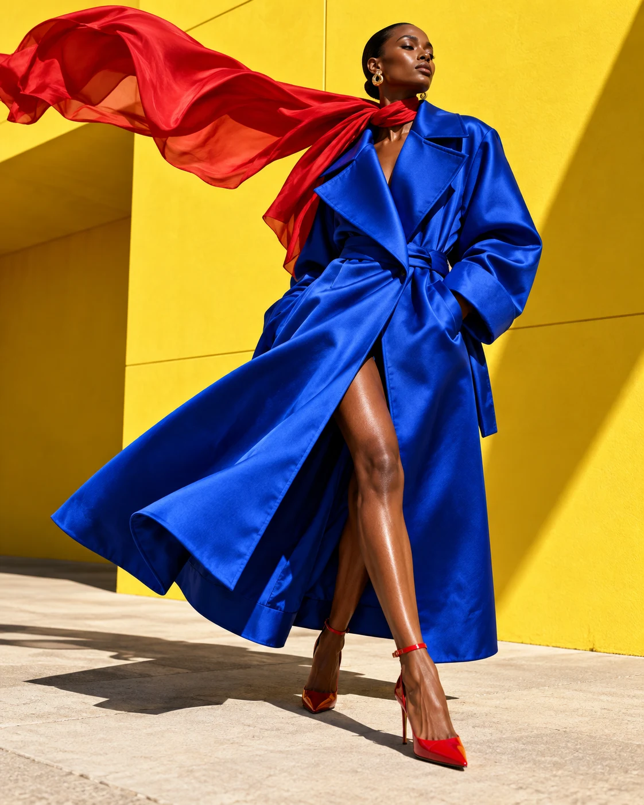
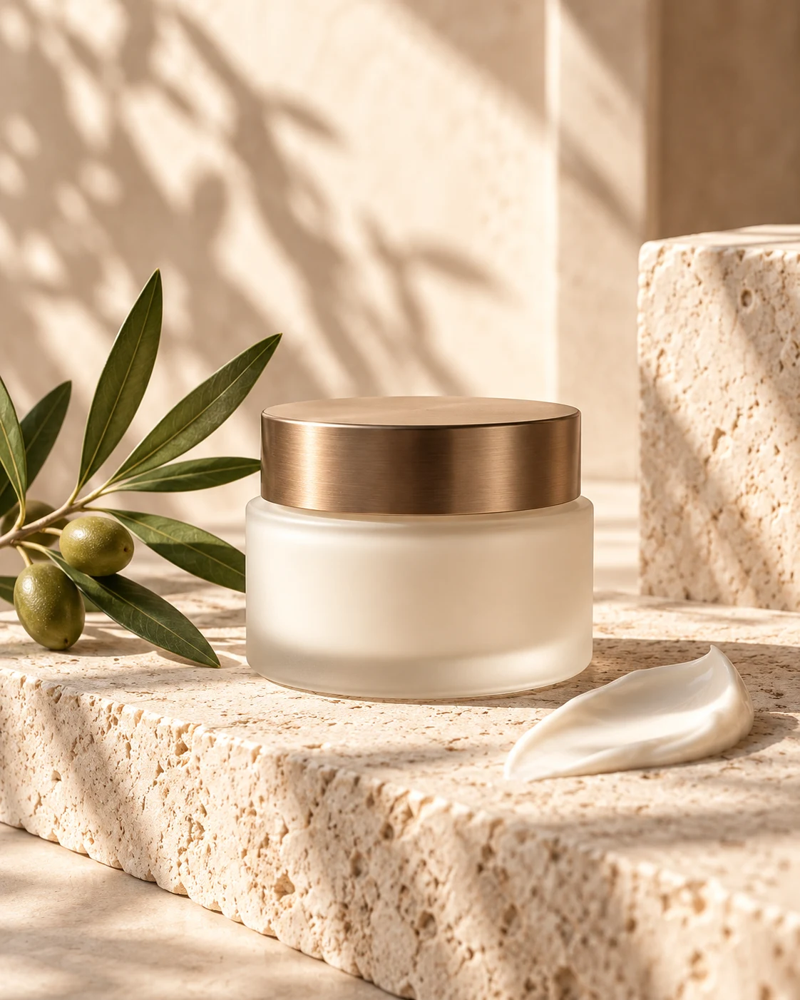

A workspace for visual ideas
把想象，
变成可见的作品。
从收集一个方向，到构思一张设计图，再到规划一段短片。VIFORM 为设计师、品牌与内容创作者，探索更连贯的视觉创作方式。
当前为本地开发原型，尚未开放公众注册或在线创作。
Creative directions
让每一种表达，
都有合适的起点。
已开发的界面围绕图像、商品视觉、短片和灵感组织展开。真实模型生成及第三方账号连接，仍在接入准备阶段。


配图为 VIFORM 开发阶段制作的原创生成概念图，用于展示艺术方向；不是用户任务成果或已上线功能的输出承诺。
One creative context
好灵感，
值得有条理地留下。
VIFORM 计划把参考、需求和作品组织在同一个创作语境里，让每次调整都有明确的来处。
- 收集方向
- 把选中的灵感、来源链接和自己的笔记整理到画板，保留清晰的来源。
- 表达需求
- 用自然语言说明画面、风格和用途，结合相应的图片工具或短片工作流。
- 继续创作
- 围绕项目里的素材与版本继续调整。生成能力待模型提供方接入后开放。
Pinterest account connection
你的收藏，
你的创作参考。
我们正在准备 Pinterest 开发者应用申请。拟通过 Pinterest 官方授权，让用户在 VIFORM 浏览自己账号中的 Pins 和 Boards。
账号连接尚未开放计划如何连接
- 由用户选择账号并授权平台申请及配置由 VIFORM 负责。用户无需提供开发者密钥，也无需向 VIFORM 提供 Pinterest 密码。
- 申请本人收藏的只读访问拟读取用户授权范围内的收藏与画板。初期不申请发布 Pin、修改画板或管理广告的权限。
- 保留来源，明确使用范围浏览和记录来源不等于取得作品使用许可。媒体进入 AI 创作前，需另行确认平台权限及素材使用权。
本介绍页不提供 Pinterest 登录、不读取任何 Pinterest 账号数据，也不包含第三方追踪脚本。VIFORM 为独立开发项目，与 Pinterest 不存在官方隶属关系。
查看数据与隐私说明Development status
正在认真做成。
目前已有可在本地运行的产品原型，正在调整视觉、交互与素材组织流程。模型服务、Pinterest 授权及面向客户的账号体系尚未上线。
此页面用于公开介绍开发中的产品及申请计划，不接受注册、付款或文件上传。正式服务开放前，将更新隐私政策与功能说明。
About VIFORM AI
VIFORM AI is an independent visual creation workspace in development, operated by liuzhenkang. A local prototype explores inspiration boards, design imagery, product visuals, and short-film planning. Public sign-up and connected generation services are not available.
The proposed Pinterest integration would let users authorize read-only access to their own Pins and Boards through Pinterest's official authorization flow. No Pinterest account data is accessed by this information site. Any media reuse or AI processing would require separate confirmation of applicable permissions and content rights.